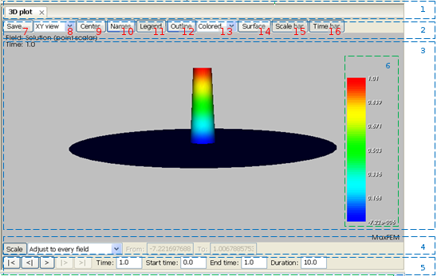

Table of contents
The graphical interface shows the resulting fields in the Visualization Window. You can identify this window bay the MaxFEM logo in the background. When adding the different graphical results, they are organized into tabs, in such a way that only the selected tab is displayed at each moment. When there are several results opened, the arrows located in the bar ends allow the user to change between them. Graphics can be closed by clicking the cross beside it's name, and they can be all closed at once selecting Menu → Visualization → Close all.

| 1. Visualization bar |
2. Visualization menu |
3. Graphic scene |
4. Scale bar |
| 5. Time bar |
6. Color bar |
7. Save button |
8. Camera combo |
| 9. Center button |
10. Names button |
11. Outline button |
12. Color combo |
| 13. Time bar |
14. Surface/edges button |
15. Scale button |
16. Time combo |
The graphical interface allows the user to interact with the figure, either rotating, zooming or moving the visualized object:
Rotating an object: click and hold the left mouse button while moving it in the rotation direction.
Zoom: click and hold the right mouse button while moving it upwards (zoom in) or downwards (zoom out). The same effect can be obtained using the scroll wheel.
Moving an object: click and hold the scroll wheel and moving the object in the desired direction.
There are three menu bars with graphical elements such as combos or buttons for controlling other aspects of the visualization:
Visualization menu: is always visible and it's located in the upper part of the visualization window, between the visualization window and the different tabs. This bar controls the visibility of the other two bars, that are located in the visualization window. The buttons that include are:
- Save...: permits to save the current view in a file.
- XY view: permits to change the perspective of the current view.
- Center: centers the whole domain in the Visualization window.
- Names: shows/hides on each sub-domain the name of the VTU file where the field is saved.
- Legend: shows/hides the legend with additional information about the field.
- Outline: shows/hides an outline with the coordinates range around the domain.
- Surface: permits to change the field representation between Surface and Wireframe.
- Scale bar: shows/hides the scale bar in the lower part of the Visualization window.
- Plane: shows/hides the cut plane (only available in Cut and Slice Visualizations).
- Time bar: shows/hides the time bar in the lower part of the Visualization window (only active for time-dependent fields).
Scale bar: this bar controls the aspects relating to the color legend and the color map (in particular, establishing the relation between colors and scalar values in the graphic). It includes the following buttons:
- Scale: shows/hides the scale in the Visualization window.
- Adjust: permits to adjust the limits of the scale range; possible options are:
- Relative/absolute scale: changes the sub-domain on which the limits of the scale range are calculated; "absolute" refers to the whole mesh and "relative" refers only to the portion shown in the Visualization window (only available in Cut and Slice visualizations).
- Adjust manually: user can change the limits manually.
- Adjust to every field: the limits will be the minimum and maximum values of the field. In the case of a time-dependent simulation, this limits will be recalculated for every time step.
- Adjust to the current field: the limits will be the minimum and maximum values of the current field. In the case of a time-dependent simulation, this limits will not be recalculated for every time step.
- Adjust to the time interval: In the case of a time-dependent simulation, the limits will be the minimum and maximum values of all time steps.
- From/To: when the user wants to adjust manually the scale range, these buttons permit to introduce the range limits.
Time bar: controls some actions to change the visualization of time-dependent fields. It includes the following buttons:
- First frame "|<": shows the first frame of the time series.
- Previous frame "<|": shows the previous frame of the time series.
- Play ">": plays the time series.
- Pause "||": pauses the animation.
- Next frame "|>": shows the next frame of the time series.
- First frame ">|": shows the last frame of the time series.
- Time: shows/edits the current time in the animation.
- Start time: shows/edits the start time in the animation.
- End time: shows/edits the end time in the animation.
- Duration: shows/edits the duration of the animation.